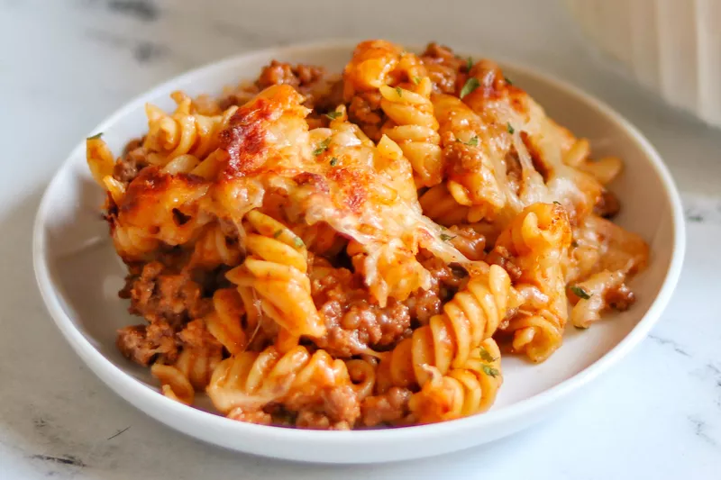

Рецепт Лазаньи

Лазанья — традиционное итальянское блюдо из тонких прямоугольных или квадратных листов теста и слоёв фарша и
сыра с соусом.
Напоминает слоёный пирог. Листы высушенного теста из муки твёрдых сортов чередуют с разной начинкой. К каждому
слою добавляют соус, сыр и запекают в жаропрочной форме.
Наиболее традиционной начинкой для лазаньи считается начинка на основе рагу с мясным фаршем, залитым соусом
бешамель и посыпанным сыром пармезан. Однако в региональных вариантах начинка может быть, в частности, из
помидоров, шпината, прочих овощей, соуса болоньезе, сыров моцарелла или рикотта.
Ингридиенты
- сливочное масло — 60 г
- оливковое масло — 2 ст. ложки;
- пшеничная мука — 2½ ст. ложки;
- молоко — 750 мл;
- фарш — 600 г;
- томатный соус — 600 г;
- соль и чёрный молотый перец — по вкусу;
- сухие листья лазаньи — 10 штук;
- твёрдый сыр — 500 г.
Приготовление
- Положите в сотейник сливочное масло, влейте растительное и расплавьте массу на среднем огне. По одной ложке
добавляйте муку и размешивайте венчиком, чтобы не было комков.
- Убавьте огонь, влейте молоко и томите смесь до консистенции нежирной сметаны — получится соус бешамель.
- Раскалите сковороду, налейте в неё оливковое масло, выложите фарш и жарьте его до полуготовности. Добавьте
в
него томатный соус, посыпьте солью и перцем по вкусу.
- Смажьте форму сливочным маслом и вылейте на дно немного соуса, приготовленного в сотейнике. Размажьте соус
по
дну.
- Выложите листы лазаньи в один слой, на них — фарш, а на него — тёртый сыр. Сыр полейте бешамелем. Сверху
снова
выложите листы, фарш, сыр и соус. Хорошо промазывайте листы со всех сторон, иначе по краям блюдо получится
сухим.
- Последний слой листов промажьте соусом и засыпьте сыром. Дайте постоять минут 7–10, после чего выпекайте
лазанью
30 минут при температуре 180 градусов.
Домой